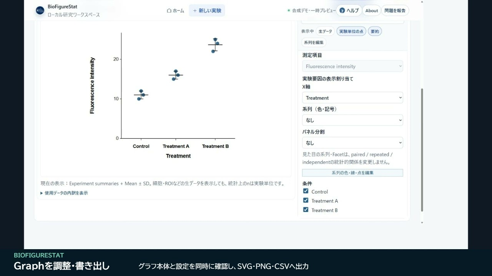

Public Alpha · Windows / macOS
生命科学の実験から始める、
統計解析とグラフ作成。
BioFigureStatは、実験構造の整理、データ入力、ローカル統計解析、研究用グラフ作成を一つのプロジェクトで行うデスクトップアプリです。統計手法名を選ぶ前に、何をどの対象で測ったかを確認します。
Public Alpha 0.1.1-alpha.1 · 無料・MIT License · 日本語／英語UI

Input → Analysis → Graph
入力から解析、グラフまで
例えばControlとTreatment A／Bの測定値を比較するときも、まず各値が独立した対象の値か、同じ対象を繰り返し測った値かを確認します。群名や数値だけでは実験構造は決まりません。
実験とデータを入力する
「新しい実験」から、処理・群分け、測定値、対象・試料、条件間の関係を確認。生成された表へ入力、Excelワークブックを取り込み、またはCSV／TSV等を貼り付けます。既存の表からまずグラフを作る入口もあります。
構造を確認して、必要な解析を実行する
「統計」で実験単位n、対応、比較範囲、注意事項を確認します。対応する範囲で独立群・対応あり・多群・反復測定、相関・単回帰、割合・分割表、Kaplan–Meier／log-rank等を扱います。未対応・曖昧な構造は近い手法へ置き換えず停止します。
グラフを整えて保存する
点、要約、誤差線、系列、軸、統計注釈を調整し、SVG／PNG／CSVへ書き出します。グラフの外観編集は解析結果を変えません。入力・実験構造・解析の由来・Graphを保つ
.lsaプロジェクトをローカルへ保存し、再度開いて確認します。
biological n・対応・反復を明示する
- 実験単位とbiological n：処理を受けた対象・試料を確認します。細胞・ROI・ウェルの数や表の行数を、そのまま独立したnとは見なしません。
- 対応：同じ対象・試料のIDや、実験で定義した対応関係を確認します。独立群の同じ行や同じ実験日だけでは、対応は成立しません。
- 反復測定・階層：同一対象を時点・条件を変えて測った事実と、対象の内側の測定を区別します。対応していない構造を、通常のANOVA等で代用しません。
解析の案内は、入力した実験構造と比較目的に基づきます。研究者による科学的・統計的な確認が必要です。
Public Alpha · 0.1.1-alpha.1
Windows／Mac版をダウンロード
MacはApple Silicon arm64・macOS 11以降が対象です。Windows版は未署名、Mac版はad-hoc署名でAppleのnotarization（公証）は未実施です。OSの警告が表示される場合があります。
公式リリースの説明・SHA-256・検証範囲を確認してから使用してください。MacはZIPを展開してBioFigureStat.appを使用します。Macの確認・起動手順も参照できます。
Alpha版の制限とデータの扱い
- 研究データと
.lsaは別の場所にもバックアップし、保存後に再度開いてGraph・統計結果・Methods・書き出しを確認してください。 - 高度なmixed-effects、Cox／競合リスク、任意の複雑な要因配置、nested X/Y推論、広範なdose-response／global fit等は対象外です。Heatmapは可視化のみです。
- 標準統計は決定論的にローカル実行します。研究データ・ファイルは自動送信しません。利用情報は明示同意制、不具合報告は内容確認と報告ごとの送信操作が必要です。
- AI Helpは統計エンジンではありません。外部LLMへの相談は、利用者による手動のコピー＆ペーストです。
既知の制限 · プライバシー説明 · ソース・ドキュメント